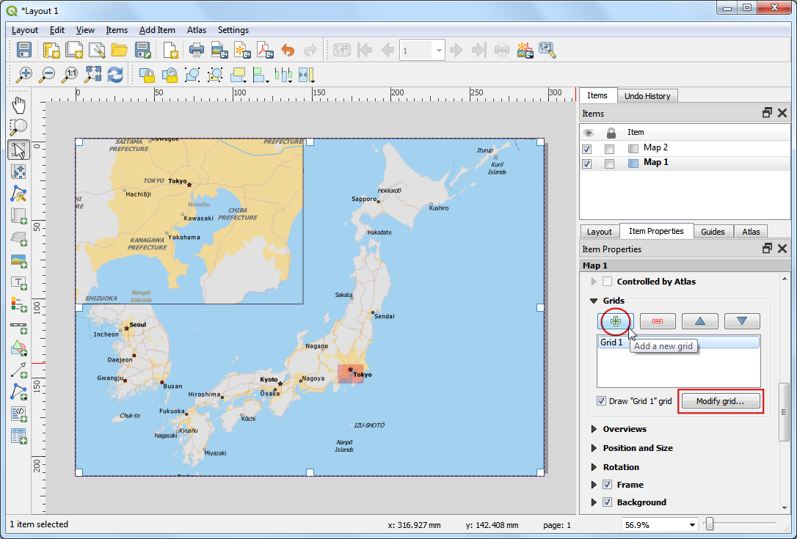

Ein Verarbeitungsplugin erstellen (QGIS3)¶
Im letzten Tutorial Ein Python Plugin erstellen (QGIS3) haben wir die Erstellung eines Python Plugins erlernt. Wir haben eine Nutzerschnittstelle erstellt und angepassten Code zur Verarbeitung der Daten verwendet. Obwohl diese Art von Plugins nützlich sind, fällt für den Autor die Last der Erstellung der Benutzerschnittstelle an. Es kann für den Nutzer verwirrend sein, da sich der Aufbau der Plugins immer unterscheiden kann. Außerdem interagieren normale Plugins nicht mit anderen Teilen von QGIS. So kann man z.B. die Plugin-Funktionalität von anderen Algorithmen nicht nutzen. Wenn z.B. das Plugin, das wir erstellen wollen vorrangig zu Analysezwecken gedacht ist und die Benutzerschnittstelle nur aus der Wahl von Eingabe- und Ausgabedatei besteht, gibt es einen einfacheren und vorzuziehenden Weg der Erstellung eines Plugins mit Hilfe der Verarbeitungswerkzeuge. Damit entfällt die Erstellung der Benutzerschnittstelle. Die eingebaute Verarbeitungsbibliothek erstellt eine Standardverarbeitungsschnittstelle in Abhängigkeit von den Eingaben, die genauso wie jedes andere Verarbeitungswerkzeug in QGIS aussieht und sich verhält. Das Plugin integriert sich auch nahtlos in die vorhandenen Verarbeitungswerkzeuge. Der Plugin-Algorithmus kann mit der Stapelverarbeitung, der grafischen Modellierung, dem Aufruf aus der Python Konsole usw. verwendet werden.
Überblick über die Aufgabe¶
Wir werden ein einfaches Plugin aus dem Tutorial Ein Python Plugin erstellen (QGIS3) als Verarbeitungswerkzeug umfunktionieren. Als Resultat erhalten wir eine neuen Verarbeitungsanbieter Save Attributes und einen Algorithmus Save Attributes as CSV, der dem Nutzer erlaubt, einen Vektorlayer zu wählen und seine Attribute in eine CSV-Datei zu schreiben.
Die Werkzeuge beschaffen¶
Ein Texteditor oder eine Python IDE¶
Jede Art von Softwareentwicklung erfordert einen guten Texteditor. Wenn man schon einen Lieblingstexteditor oder eine IDE (Integrated Development Environment - Softwareentwicklungsumgebung) hat, kann man sie hier verwenden. Ansonsten bieten alle Plattformen eine Vielzahl an freien oder kommerziellen Möglichkeiten für einen Texteditor. Wähle den Editor entsprechend der Erfordernisse aus.
In dieser Anleitung wird der Editor Notepad++ für Windows verwendet.
Windows
Notepad++ ist ein guter und freier Editor für Windows. Lade den Editor unter <https://notepad-plus-plus.org/download/>`_ herunter und installiere ihn.
Bemerkung
Wenn man Notepad++ verwendet, muss man darauf achten, dass unter die Einstellung Durch Leerzeichen ersetzen gewählt ist. Python ist sehr empfindlich bezüglich Leerzeichen und diese Einstellung stellt sicher, dass Tabulator und Leerzeichen richtig ausgewertet werden.
Plugin Builder Erweiterung¶
Es gibt eine nützliche QGIS Erweiterung Plugin Builder, die alle notwendigen Dateien und eine Vorlage des Programmcodes für die Erweiterung erstellt. Finde und installiere die Erweiterung Plugin Builder. Unter Verwenden von Erweiterungen findet man weitere Details zur Installation von Erweiterungen.
Plugins Reloader plugin¶
Dies ist eine andere Erweiterung, die die schrittweise Entwicklung von Erweiterungen ermöglicht. Mit Hilfe dieser Erweiterung kann man den Programmcode der Erweiterung ändern und die Auswirkung in QGIS sehen, ohne QGIS jedes Mal neu starten zu müssen. Finde und installiere die Erweiterung Plugin Reloader. Unter Verwenden von Erweiterungen findet man weitere Details zur Installation von Erweiterungen.
Bemerkung
Plugin Reloader ist eine experimentelle Erweiterung. Man muss die Einstellung Auch experimentelle Erweiterungen anzeigen unter Erweiterungen zu aktivieren.
Arbeitsablauf¶
Öffne QGIS. Gehe zu .

Wir sehen nun das Fenster QGIS Plugin Builder mit einem Formular. Wir füllen das Formular mit Details zu unserer Erweiterung. Das Feld Class name enthält den Namen der Python Klasse mit der Funktionalität der Erweiterung. Dieser Name wird auch dem Ordnernamen entsprechen, der alle zur Erweiterung gehörenden Dateien enthält. Wir verwenden
SaveAttributesals Class name. Das Feld Plugin name ist der Name unter dem die Erweiterung im Plugin Manager erscheinen wird. Wir geben hierSave Attributes (Processing)ein. Im Feld Description fügen wir eine Beschreibung hinzu. Das Feld Module name enthält den Namen der Python Hauptdatei der Erweiterung. Wir geben hiersave_attributes_processingein. Wir lassen die Versionsnummer unverändert und geben unseren Namen und E-mail Adresse in die entsprechenden Felder ein. Klicke auf Next.

Gebe eine kurze Beschreibung der Erweiterung im Eingabefenster About ein und klicke auf Next.

Wähle
Processing Providerim Auswahlfeld Template. Der Inhalt des Feldes Algorithm name bestimmt, unter welchem Namen der Nutzer den Algorithmus in den Verarbeitungswerkzeugen findet. Wir geben hierSave Attributes as CSVein. Das Feld Algorithm group lassen wir leer. Bei Provider name verwenden wirSave Attributes. Gebe unter Provider description eine Beschreibung ein. Klicke auf Next.

Der Plugin Builder fragt nun nach den zu generierenden Dateitypen, Wir belassen die Standardeinstellung und klicken auf Next.

Da wir die Erweiterung nicht veröffentlichen wollen, können wir die Einträge Bug tracker, Repository und Home page unverändert lassen. Wir setzen den Haken bei Flag the plugin as experimental und kicken auf Next.

Wir werden als Nächstes aufgefordert, ein Verzeichnis für die Erweiterung zu vergeben. Fürs Erste geben wir zum Speichern ein lokales Verzeichnis an, das wir leicht erreichen und klicken auf Generate.

Drücke jetzt auf den generate Knopf. Wir erhalten ein Bestätigung, sobald die Vorlage der Erweiterung erstellt wurde.

Bemerkung
Unter Umständen erhalten wir eine Meldung, dass pyrcc5 nicht im Pfad gefunden wurde. Wir können die Meldung ignorieren.
QGIS Erweiterungen werden in einem besonderen Ordner gespeichert. Wir müssen das Verzeichnis unserer Erweiterung in diesen Ordner kopieren, bevor wir die Erweiterung benutzen können. Den aktuellen Profilordner finden wir in QGIS unter .

Kopiere den Ordner der Erweiterung in folgenden Ordner .

Jetzt können wir einen ersten Blick auf das brandneu erstellte Plugin werfen. Schließe QGIS und starte es erneut. Gehe zu und schalte die Erweiterung
Save Attributes (Processing)im Bereich Installiert ein.

Gehe zu . Wir sehen, dass unten ein neues Werkzeug
Save Attributesauftaucht. Erweitere es, um den AlgorithmusSave Attributes as CSVzu sehen. Klicke zum Starten doppelt darauf.

Wir sehen ein bekanntes Dialogfenster eines Verarbeitungswerkzeuges mit einem Dropdown-Menü für den Eingabelayer und einem Wahlfeld für den Ausgabelayer. Wir werden das Dialogfenster nun an unsere Vorstellungen anpassen. Schließe das Fenster.

Gehe zum Ordner mit dem Plugin und lade die Datei
save_attributes_processing_algorithm.pyin einen Texteditor. Für unser Plugin nehmen wir einen Vektorlayer als Eingabe und schreiben eine CSV-Datei als Ausgabe. Anstelle vonQgsProcessingParameterFeatureSinkals Ausgabe - welches für Vektorlayer verwendet wird - schreiben wirQgsProcessingParameterFileDestination, das für Dateien verwendet wird.from qgis.core import (QgsProcessing, QgsFeatureSink, QgsProcessingAlgorithm, QgsProcessingParameterFeatureSource, QgsProcessingParameterFileDestination)
Als nächstes scrollen wir nach unten und geben den Ausgabeparameter unter der
initAlgorithm()Methode entsprechend dem folgendem Code ein.self.addParameter( QgsProcessingParameterFileDestination( self.OUTPUT, self.tr('Output File'), 'CSV files (*.csv)', ) )


Wir laden die Erweiterung jetzt neu, um die Veränderungen des Dialogfensters zu sehen. Gehe zu . Wähle
save_Attributes_processingin der Dialogbox Configure Plugin reloader.

Klicke auf den Knopf Reload plugin um die letzte Version des Plugins zu laden. Um die neue Funktionalität zu testen, müssen wir Layer in QGIS laden. Nach dem Einladen einiger Layer, starten wir den Algorithmus . Wir sehen, dass für die Ausgabe anstatt eines Layers nun eine Datei vorgesehen ist.

Wir werden nun einige Funktionen zum Algorithmus hinzufügen, die die Attribute des selektierten Vektorlayers in eine CSV-Datei schreiben. Die Beschreibung des Codes findet man unter Mit der Pythonprogrammierung loslegen (QGIS3). Im Unterschied zum alten Script ist hier ein Zähler integriert, der den Fortschritt der Verarbeitung anzeigt. Füge folgenden Code zur Methode
processAlgorithmhinzu und speichere die Datei.def processAlgorithm(self, parameters, context, feedback): """ Here is where the processing itself takes place. """ source = self.parameterAsSource(parameters, self.INPUT, context) csv = self.parameterAsFileOutput(parameters, self.OUTPUT, context) fieldnames = [field.name() for field in source.fields()] # Compute the number of steps to display within the progress bar and # get features from source total = 100.0 / source.featureCount() if source.featureCount() else 0 features = source.getFeatures() with open(csv, 'w') as output_file: # write header line = ','.join(name for name in fieldnames) + '\n' output_file.write(line) for current, f in enumerate(features): # Stop the algorithm if cancel button has been clicked if feedback.isCanceled(): break # Add a feature in the sink line = ','.join(str(f[name]) for name in fieldnames) + '\n' output_file.write(line) # Update the progress bar feedback.setProgress(int(current * total)) return {self.OUTPUT: csv}

Zurück im QGIS Fenster laden wir das Plugin durch Klick auf Reload plugin neu. Starte den Algorithmus . Wähle einen Layer als Input layer. Klicke als nächstes auf den Knopf … neben Output file.

Wir nennen die Ausgabedatei
test.csvund klicken auf Starte. Der Algorithmus erstellt bei der Abarbeitung eine CSV-Datei und legt sie an der vorgegebenen Stelle ab.

Wie schon erwähnt, harmoniert der Algorithmus sehr gut mit den eingebauten Verarbeitungswerkzeugen, obwohl er aus einem Plugin stammt. Um das zu zeigen, verwenden wir den Algorithmus mit der eingebauten Stapelverarbeitung. Klicke mit der rechten Maustaste auf den Algorithmus und wähle Als Stapelprozess ausführen….

Wir können mehrere Eingabedateien wählen und mit Hilfe der Stapelverarbeitung mehrere CSV-Dateien in einem Durchlauf erzeugen. Unter Stapelverarbeitung mit dem Processing Framework (QGIS3) findet man eine Schritt-für-Schritt-Anleitung zur Stapelverarbeitung.

The plugin is ready and you can ship it in the current form. But we can improve the user experience by making the processing plugin behave like a regular plugin. Using the hybrid approach outlined below, you can add a menu item and a toolbar button. This way, you give the users an easier way to discover and launch the tools that are installed as part of the plugin. We will need an icon for the plugin. Download logo.png and copy it to the plugin directory.

Öffne die Datei
save_attributes_processing.pyund füge folgende Importe zu Beginn der Datei hinzu.from qgis.PyQt.QtWidgets import QAction from qgis.PyQt.QtGui import QIcon from qgis.core import QgsProcessingAlgorithm, QgsApplication import processing
Scroll down and modify the
__init__()method to initialize iface.def __init__(self, iface): self.provider = None self.iface = iface
Scroll down further and locate the
initGuimethod. It only contains the code to initialize the processing provider. We will add the code to add a toolbar button and a menu item. We will also need to add code to theunloadmethod, to remove these elements when plugin is removed.def initGui(self): self.initProcessing() icon = os.path.join(os.path.join(cmd_folder, 'logo.png')) self.action = QAction( QIcon(icon), u"Save Attributes as CSV", self.iface.mainWindow()) self.action.triggered.connect(self.run) self.iface.addPluginToMenu(u"&SaveAttributes", self.action) self.iface.addToolBarIcon(self.action) def unload(self): QgsApplication.processingRegistry().removeProvider(self.provider) self.iface.removePluginMenu(u"&SaveAttributes", self.action) self.iface.removeToolBarIcon(self.action)
Wir haben nun dem Knopf und dem Menüeintrag die Ausführung der
runMethode bei Klick zugewiesen. Wir fügen noch eine neue Methode weiter unten ein, die die HilfsmethodeexecAlgorithmDialogzum Starten des Algorithmus verwendet.def run(self): processing.execAlgorithmDialog("Save Attributes:Save Attributes as CSV")


Als nächstes nehmen wir eine kleine Änderung an der Datei
__init__.pyim Plugin Verzeichnis vor. Öffne die Datei und fügeifacezur Rückgabeanweisung hinzu, so dass die Referenz zur QGIS Schnittstelle an das Plugin übergeben wird.

Zurück im QGIS Fenster laden wir das Plugin durch Klick auf Reload plugin neu. Wir sehen ein neues Icon in der Werkzeugleiste und einen Menüeintrag unter . Wir können darauf klicken, um den Algorithmus
Save Attributes as CSVzu starten. Wir sehen, dass der Algorithmus in den Verarbeitungswerkzeugen noch das alte Standardicon hat. Wir werden das jetzt noch anpassen.

Öffne die Datei
save_attributes_processing_provider.pyaus dem Plugin Verzeichnis. Füge die folgenden Importe zu Beginn der Datei hinzu.import os import inspect from qgis.PyQt.QtGui import QIcon
Passe die
iconMethode wie folgt an, um das benutzerdefinierte Icon hinzuzufügen.def icon(self): cmd_folder = os.path.split(inspect.getfile(inspect.currentframe()))[0] icon = QIcon(os.path.join(os.path.join(cmd_folder, 'logo.png'))) return icon


Als nächstes öffnen wir die Datei
save_attributes_processing_algorithm.pyund fügen die folgenden Importe zu Beginn der Datei hinzu.import os import inspect from qgis.PyQt.QtGui import QIcon
Wir fügen eine neue
iconMethode mit dem folgenden Code hinzu.def icon(self): cmd_folder = os.path.split(inspect.getfile(inspect.currentframe()))[0] icon = QIcon(os.path.join(os.path.join(cmd_folder, 'logo.png'))) return icon


Wir laden das Plugin neu und sehen, dass die Icons in den Verarbeitungswerkzeugen ausgetauscht wurden.

{kind=link}
Wir können das Plugin Verzeichnis nun zip-packen und es mit anderen Nutzern teilen. Sie können die zip-Datei in ihrem Plugin-Ordner entpacken und das Plugin so ausprobieren. Wenn es ein richtiges Plugin wäre, könnte man es in das QGIS Plugin Repository hochladen, so dass alle QGIS Nutzer das Plugin finden und herunterladen könnten.
Bemerkung
Diese Erweiterung wurde nur zu Demonstrationszwecken erstellt. Veröffentliche die Erweiterung nicht und stelle sie nicht im QGIS plugin repository bereit.
Es folgen die vollständigen Quelltexte als Referenz.
__init__.py
# -*- coding: utf-8 -*-
"""
/***************************************************************************
SaveAttributes
A QGIS plugin
This plugin adds an algorithm to save attributes of selected layer as a CSV file
Generated by Plugin Builder: http://g-sherman.github.io/Qgis-Plugin-Builder/
-------------------
begin : 2019-09-18
copyright : (C) 2019 by Ujaval Gandhi
email : ujaval@spatialthoughts.com
***************************************************************************/
/***************************************************************************
* *
* This program is free software; you can redistribute it and/or modify *
* it under the terms of the GNU General Public License as published by *
* the Free Software Foundation; either version 2 of the License, or *
* (at your option) any later version. *
* *
***************************************************************************/
This script initializes the plugin, making it known to QGIS.
"""
__author__ = 'Ujaval Gandhi'
__date__ = '2019-09-18'
__copyright__ = '(C) 2019 by Ujaval Gandhi'
# noinspection PyPep8Naming
def classFactory(iface): # pylint: disable=invalid-name
"""Load SaveAttributes class from file SaveAttributes.
:param iface: A QGIS interface instance.
:type iface: QgsInterface
"""
#
from .save_attributes_processing import SaveAttributesPlugin
return SaveAttributesPlugin(iface)
save_attributes_processing.py
# -*- coding: utf-8 -*-
"""
/***************************************************************************
SaveAttributes
A QGIS plugin
This plugin adds an algorithm to save attributes of selected layer as a CSV file
Generated by Plugin Builder: http://g-sherman.github.io/Qgis-Plugin-Builder/
-------------------
begin : 2019-09-18
copyright : (C) 2019 by Ujaval Gandhi
email : ujaval@spatialthoughts.com
***************************************************************************/
/***************************************************************************
* *
* This program is free software; you can redistribute it and/or modify *
* it under the terms of the GNU General Public License as published by *
* the Free Software Foundation; either version 2 of the License, or *
* (at your option) any later version. *
* *
***************************************************************************/
"""
__author__ = 'Ujaval Gandhi'
__date__ = '2019-09-18'
__copyright__ = '(C) 2019 by Ujaval Gandhi'
# This will get replaced with a git SHA1 when you do a git archive
__revision__ = '$Format:%H$'
import os
import sys
import inspect
from qgis.PyQt.QtWidgets import QAction
from qgis.PyQt.QtGui import QIcon
from qgis.core import QgsProcessingAlgorithm, QgsApplication
import processing
from .save_attributes_processing_provider import SaveAttributesProvider
cmd_folder = os.path.split(inspect.getfile(inspect.currentframe()))[0]
if cmd_folder not in sys.path:
sys.path.insert(0, cmd_folder)
class SaveAttributesPlugin(object):
def __init__(self, iface):
self.provider = None
self.iface = iface
def initProcessing(self):
"""Init Processing provider for QGIS >= 3.8."""
self.provider = SaveAttributesProvider()
QgsApplication.processingRegistry().addProvider(self.provider)
def initGui(self):
self.initProcessing()
icon = os.path.join(os.path.join(cmd_folder, 'logo.png'))
self.action = QAction(
QIcon(icon),
u"Save Attributes as CSV", self.iface.mainWindow())
self.action.triggered.connect(self.run)
self.iface.addPluginToMenu(u"&SaveAttributes", self.action)
self.iface.addToolBarIcon(self.action)
def unload(self):
QgsApplication.processingRegistry().removeProvider(self.provider)
self.iface.removePluginMenu(u"&SaveAttributes", self.action)
self.iface.removeToolBarIcon(self.action)
def run(self):
processing.execAlgorithmDialog("Save Attributes:Save Attributes as CSV")
save_attributes_processing_algorithm.py
# -*- coding: utf-8 -*-
"""
/***************************************************************************
SaveAttributes
A QGIS plugin
This plugin adds an algorithm to save attributes of selected layer as a CSV file
Generated by Plugin Builder: http://g-sherman.github.io/Qgis-Plugin-Builder/
-------------------
begin : 2019-09-18
copyright : (C) 2019 by Ujaval Gandhi
email : ujaval@spatialthoughts.com
***************************************************************************/
/***************************************************************************
* *
* This program is free software; you can redistribute it and/or modify *
* it under the terms of the GNU General Public License as published by *
* the Free Software Foundation; either version 2 of the License, or *
* (at your option) any later version. *
* *
***************************************************************************/
"""
__author__ = 'Ujaval Gandhi'
__date__ = '2019-09-18'
__copyright__ = '(C) 2019 by Ujaval Gandhi'
# This will get replaced with a git SHA1 when you do a git archive
__revision__ = '$Format:%H$'
import os
import inspect
from qgis.PyQt.QtGui import QIcon
from qgis.PyQt.QtCore import QCoreApplication
from qgis.core import (QgsProcessing,
QgsFeatureSink,
QgsProcessingAlgorithm,
QgsProcessingParameterFeatureSource,
QgsProcessingParameterFileDestination)
class SaveAttributesAlgorithm(QgsProcessingAlgorithm):
"""
This is an example algorithm that takes a vector layer and
creates a new identical one.
It is meant to be used as an example of how to create your own
algorithms and explain methods and variables used to do it. An
algorithm like this will be available in all elements, and there
is not need for additional work.
All Processing algorithms should extend the QgsProcessingAlgorithm
class.
"""
# Constants used to refer to parameters and outputs. They will be
# used when calling the algorithm from another algorithm, or when
# calling from the QGIS console.
OUTPUT = 'OUTPUT'
INPUT = 'INPUT'
def initAlgorithm(self, config):
"""
Here we define the inputs and output of the algorithm, along
with some other properties.
"""
# We add the input vector features source. It can have any kind of
# geometry.
self.addParameter(
QgsProcessingParameterFeatureSource(
self.INPUT,
self.tr('Input layer'),
[QgsProcessing.TypeVectorAnyGeometry]
)
)
# We add a file output of type CSV.
self.addParameter(
QgsProcessingParameterFileDestination(
self.OUTPUT,
self.tr('Output File'),
'CSV files (*.csv)',
)
)
def processAlgorithm(self, parameters, context, feedback):
"""
Here is where the processing itself takes place.
"""
source = self.parameterAsSource(parameters, self.INPUT, context)
csv = self.parameterAsFileOutput(parameters, self.OUTPUT, context)
fieldnames = [field.name() for field in source.fields()]
# Compute the number of steps to display within the progress bar and
# get features from source
total = 100.0 / source.featureCount() if source.featureCount() else 0
features = source.getFeatures()
with open(csv, 'w') as output_file:
# write header
line = ','.join(name for name in fieldnames) + '\n'
output_file.write(line)
for current, f in enumerate(features):
# Stop the algorithm if cancel button has been clicked
if feedback.isCanceled():
break
# Add a feature in the sink
line = ','.join(str(f[name]) for name in fieldnames) + '\n'
output_file.write(line)
# Update the progress bar
feedback.setProgress(int(current * total))
return {self.OUTPUT: csv}
def name(self):
"""
Returns the algorithm name, used for identifying the algorithm. This
string should be fixed for the algorithm, and must not be localised.
The name should be unique within each provider. Names should contain
lowercase alphanumeric characters only and no spaces or other
formatting characters.
"""
return 'Save Attributes as CSV'
def displayName(self):
"""
Returns the translated algorithm name, which should be used for any
user-visible display of the algorithm name.
"""
return self.tr(self.name())
def group(self):
"""
Returns the name of the group this algorithm belongs to. This string
should be localised.
"""
return self.tr(self.groupId())
def groupId(self):
"""
Returns the unique ID of the group this algorithm belongs to. This
string should be fixed for the algorithm, and must not be localised.
The group id should be unique within each provider. Group id should
contain lowercase alphanumeric characters only and no spaces or other
formatting characters.
"""
return ''
def tr(self, string):
return QCoreApplication.translate('Processing', string)
def icon(self):
"""
Should return a QIcon which is used for your provider inside
the Processing toolbox.
"""
cmd_folder = os.path.split(inspect.getfile(inspect.currentframe()))[0]
icon = QIcon(os.path.join(os.path.join(cmd_folder, 'logo.png')))
return icon
def createInstance(self):
return SaveAttributesAlgorithm()
save_attributes_processing_provider.py
# -*- coding: utf-8 -*-
"""
/***************************************************************************
SaveAttributes
A QGIS plugin
This plugin adds an algorithm to save attributes of selected layer as a CSV file
Generated by Plugin Builder: http://g-sherman.github.io/Qgis-Plugin-Builder/
-------------------
begin : 2019-09-18
copyright : (C) 2019 by Ujaval Gandhi
email : ujaval@spatialthoughts.com
***************************************************************************/
/***************************************************************************
* *
* This program is free software; you can redistribute it and/or modify *
* it under the terms of the GNU General Public License as published by *
* the Free Software Foundation; either version 2 of the License, or *
* (at your option) any later version. *
* *
***************************************************************************/
"""
__author__ = 'Ujaval Gandhi'
__date__ = '2019-09-18'
__copyright__ = '(C) 2019 by Ujaval Gandhi'
# This will get replaced with a git SHA1 when you do a git archive
__revision__ = '$Format:%H$'
import os
import inspect
from qgis.PyQt.QtGui import QIcon
from qgis.core import QgsProcessingProvider
from .save_attributes_processing_algorithm import SaveAttributesAlgorithm
class SaveAttributesProvider(QgsProcessingProvider):
def __init__(self):
"""
Default constructor.
"""
QgsProcessingProvider.__init__(self)
def unload(self):
"""
Unloads the provider. Any tear-down steps required by the provider
should be implemented here.
"""
pass
def loadAlgorithms(self):
"""
Loads all algorithms belonging to this provider.
"""
self.addAlgorithm(SaveAttributesAlgorithm())
# add additional algorithms here
# self.addAlgorithm(MyOtherAlgorithm())
def id(self):
"""
Returns the unique provider id, used for identifying the provider. This
string should be a unique, short, character only string, eg "qgis" or
"gdal". This string should not be localised.
"""
return 'Save Attributes'
def name(self):
"""
Returns the provider name, which is used to describe the provider
within the GUI.
This string should be short (e.g. "Lastools") and localised.
"""
return self.tr('Save Attributes')
def icon(self):
"""
Should return a QIcon which is used for your provider inside
the Processing toolbox.
"""
cmd_folder = os.path.split(inspect.getfile(inspect.currentframe()))[0]
icon = QIcon(os.path.join(os.path.join(cmd_folder, 'logo.png')))
return icon
def longName(self):
"""
Returns the a longer version of the provider name, which can include
extra details such as version numbers. E.g. "Lastools LIDAR tools
(version 2.2.1)". This string should be localised. The default
implementation returns the same string as name().
"""
return self.name()